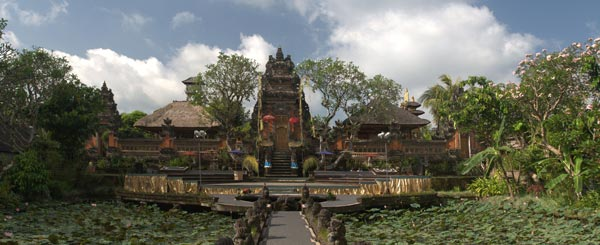

Pura Taman Saraswati
Penjelasan Pura Taman Saraswati
Pura Taman Saraswati Ubud - Wisata ke Ubud Bali, apa ada yang tidak suka? Jika ada, sebagian besar penyebabnya karena harga-harga di kawasan objek wisata Ubud, lebih mahal dibandingkan dengan objek wisata terkenal di Bali yang lain.Hampir sebagian besar wisatawan mancanegara dan domestik, selalu merencanakan untuk mengunjungi tempat wisata di Ubud. Disini tersedia banyak hotel dari kelas bintang lima sampai dengan hotel melati.
Selain itu, Ubud juga sangat terkenal akan wisata arung jeram yang lebih dikenal dengan nama Ayung rafting Ubud.Desa Ubud, sangat terkenal akan wisata seni dan budaya dan setiap hari di tempat wisata Ubud, diselenggarakan pentas kesenian Bali. Salah satunya adalah pementasan tari kecak Bali.Ubud merupakan salah satu tempat terbaik untuk menonton tari kecak di Bali, selain menonton tari kecak di Uluwatu. Salah satu tempat pementasan tarian kecak di Ubud adalah di Pura Taman Saraswati Ubud.
Menonton Tari Kecak Di Pura Taman Saraswati Ubud
Sebelum kami menuliskan tentang tari kecak di Pura Taman Saraswati Ubud. Ada baiknya kami menuliskan sedikit tentang pura Pura Taman Saraswati Ubud. Seperti yang anda tahu, pura adalah tempat suci agama hindu di Bali dan pura Taman Saraswati Ubud adalah salah satunya. Pura ini, sesuai dengan namanya adalah tempat pemujaan Dewi Saraswati (Dewi Pengetahuan). Lokasi dari pura ini, terdapat di jalan raya Ubud.
Pura Taman Saraswati Ubud, sedikit berbeda dari pura-pura lain yang ada di Bali. Pura ini memiliki kolam yang banyak terdapat bunga teratai dan kolam teratai inilah, daya tarik utama dari pura Saraswati. Jika anda menyukai melihat seni ukir khas Ubud Bali, disinilah tempatnya untuk melihat. Hampir setiap bangunan pura, terdapat seni ukir dari para seniman Ubud.
Pura Kolam Bunga Teratai
Pura ini memiliki panggung pemantasan tari kecak dan panggung di kelilingi oleh kolam teratai. Saat anda liburan di Bali dan berencana untuk menonton tarian kecak Ubud di Pura Taman Saraswati, sebaiknya anda memperhatikan terlebih dahulu, jadwal pementasan tarian kecak di Pura Taman Saraswat Ubud. Tidak setiap hari, diadakan pementasan tarian kecak di pura ini.
Jadwal Pementasan Tari Kecak Di Pura Taman Saraswati Ubud
Hari selasa dan hari kamis, mulai pertunjukan jam 19:30, dengan harga tiket Rp 75.000 per orang. Pertunjukan tarian kecak di bawakan oleh group tari Sandhi Suara.
Bagi anda yang ingin menonton tarian kecak di Ubud tidak akan susah, walupun anda tidak datang pada hari selasa atau kamis. Setiap hari diadakan pementasan tarian kecak di Ubud, hanya tempat pementasannya yang berbeda-beda.
Lihat di sini Jadwal Tari Kecak Ubud.
Bagi anda yang tidak memilih hotel tempat menginap di Ubud dan berencana untuk wisata ke Ubud, ada beberapa cara yang dapat anda lakukan untuk dapat berwisata ke objek wisata Ubud.
1. Mencari Jasa Sewa Mobil Dengan Supir Di Bali
Dengan cara menyewa mobil + driver di Bali, akan sangat memudahkan anda untuk berpergian dari satu tempat wisata di Bali ke tempat wisata yang lain, tanpa memikirkan mencari tempat parkir, mencari jalan pintas, serta memikirakan tetang kemacetan jalanan.
Objek wisata di Ubud, sangat jarang tersedia tempat parkir mobil, hampir sebagian besar, orang parkir di penggir jalan dan sangat sering penuh. Karena hal ini, kami sangat menyarankan anda untuk mencari penyedia jasa rent car di Bali dengan supir.
2. Membeli Paket Wisata Murah Di Bali
Karena Ubud sangat terkenal dan mendapat permintaan yang sangat tinggi dari wisatawan, maka sangat banyak penyedia usaha perjalanan wisata yang menyediakan Ubud tour.
Kelebihan dari membeli paket tour murah di Bali, selain anda mendapat kelebihan layanan jasa sewa mobil dengan supir, jadwal tour anda akan terencana dan terarah. Selain itu, budget liburan anda akan terencana.